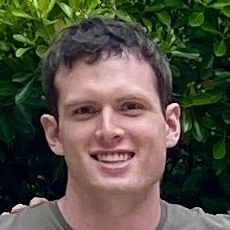
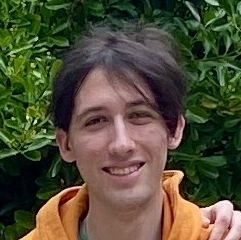

Simulating artificial microbes from organelles to evolution
Start your own simulation and watch the cells evolve!
Protobiota is an artificial life (A-life) simulation—software that replicates the structures and processes of organisms and simulates them in a virtual environment. Our project focuses on protozoa-like single-cellular organisms, and we sought to demonstrate large-scale phenomena such as evolution and speciation.
In our simulation each cell has various substructures, such as nuclei and mitochondria, that operate by very simple rules. We can, however, observe more complex behaviors emerging from these basic processes. For example, the cells exhibit homeostasis (maintaining internal equilibrium), chemotaxis (food-seeking), and metabolism (digesting nutrients). We show that these organisms can adapt to internal and external pressures through natural selection and develop self-sustaining processes.
Important use cases
- Studying the emergence of life-like behaviors from simple rules and emergent phenomena in complex systems, such as the evolution of cooperation and the development of symbiotic relationships.
- Demonstrating the principles of evolution and natural selection in a classroom or academic setting in a way that is more fun and engaging than traditional methods.
- Can be used as a tool for teaching biology. This includes basic cell structure and functions as well as cell behavior and interactions along with the aforementioned principles of evolution.
How we compare to other simulations
Protobiota is unique in that it is has more detail and complex behaviors than many other A-life simulations. It is also a simulation of artificial life that is designed to be easy to use and understand, with a more simple and intuitive interface. It has more detailed graphics than many other A-life simulations that are specifically designed to tell the user exactly what is happening with each cell. All this makes it more engaging and ideal for educational purposes, as it can be used to teach complex biological concepts in a way that is engaging and interactive without requiring indepth prior knowledge.
Download Protobiota
Come back to download simulation when 1.0 is released
Download source code and documentationMeet the Team
-

Max Cole
colemax@oregonstate.edu
-
Ethan Doll
dolle@oregonstate.edu
-

Wyatt Holliday
wyatt.holliday10@gmail.com
-

Sasha Rosenthal
rosenths@oregonstate.edu
-

Myles Scholz
myles.scholz@gmail.com
Project Partner
Bill Pfeil
Senior Instructor I
Oregon State University
Built with Godot and GDExtension
Godot is an open-source game engine that we used as a framework for Protobiota. It handles much of the rendering, UI, and physics behavior of the simulation. Additionally, we used GDExtension--an interface of Godot that allowed us to write custom nodes in C++.